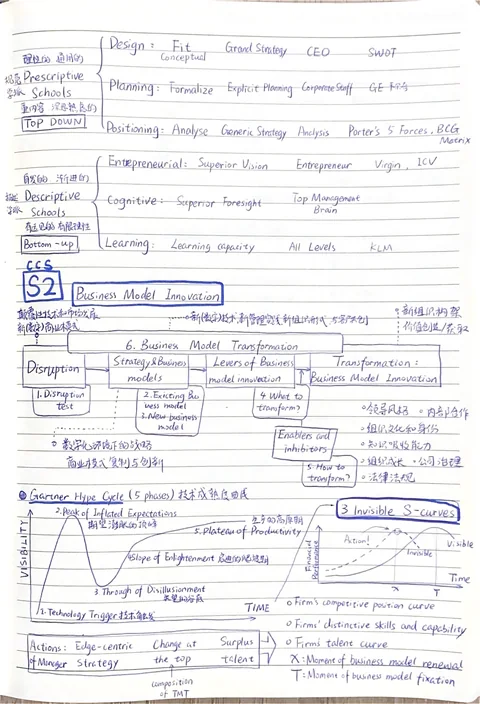
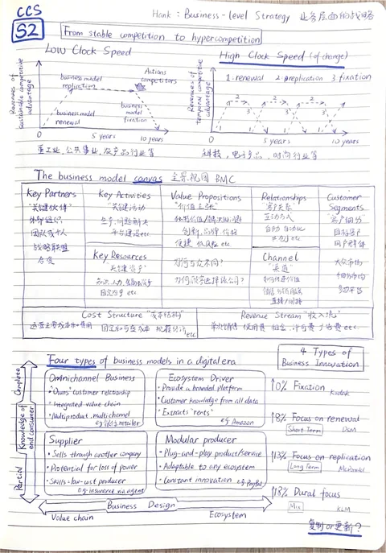
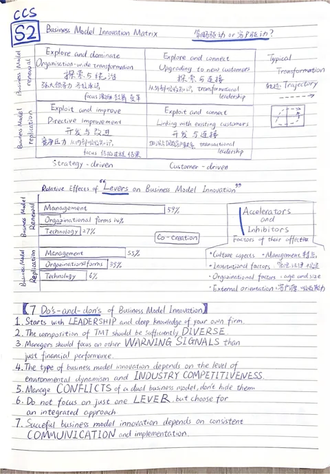
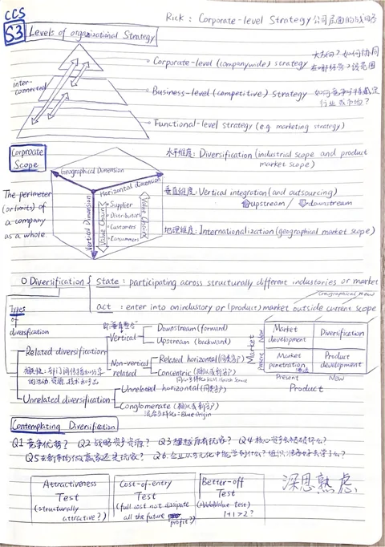
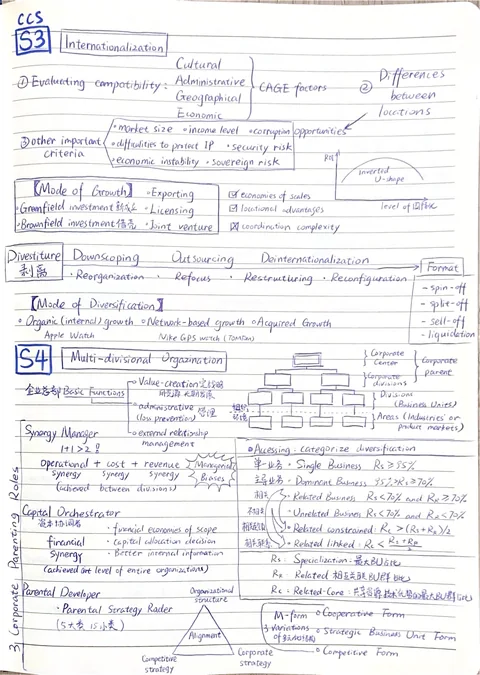
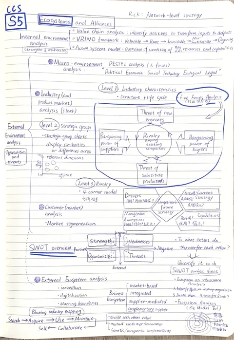
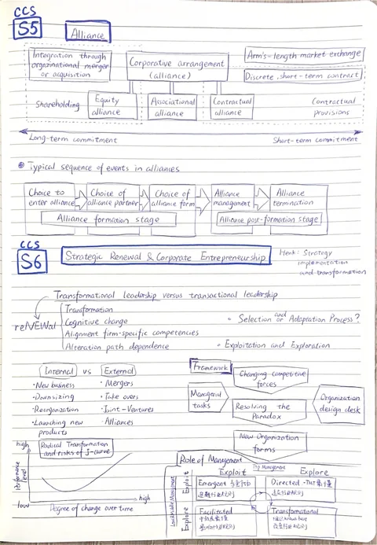

Written by hand / October 2023
The pages that started it.
Nine original pages of my CCS revision notes. The handwriting, diagrams and bilingual annotations remain as they were. The English guides sit alongside them, without replacing the originals.
Open the complete original PDF ↗9 pages · 37.2 MB · Original file unchanged

Strategy, industry structure and resource-based advantage

The strategy schools and business model innovation

Competitive change, the canvas and digital business models

Transformation routes and the levers of innovation

Strategy levels, corporate scope and diversification

Internationalization and the multidivisional organization

Portfolio matrices and resource allocation

Strategic analysis, SWOT and ecosystems
